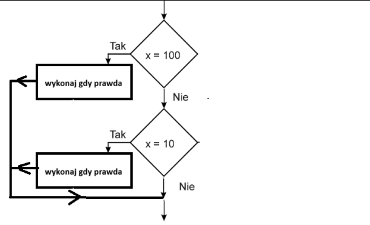
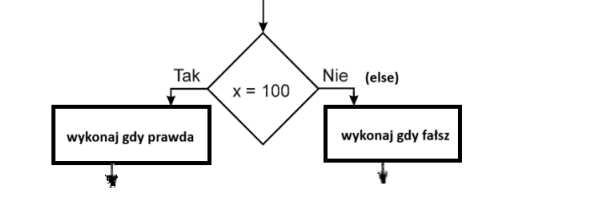

Instrukcja wyboru
Instrukcja wyboru - schemat blokowy

Instrukcja alternatywy
Instrukcja alternatywy - schemat blokowy.

Operatory porównania.
Uwaga do operatorów porównania.
Należy odróżnić == ( dwa razy ) od = (jeden raz)
== ( dwa razy ) - instrukcja PORÓWNANIA
= (jeden raz) - instrukcja PRZYPISANIA np. a=5;
Operatory logiczne.